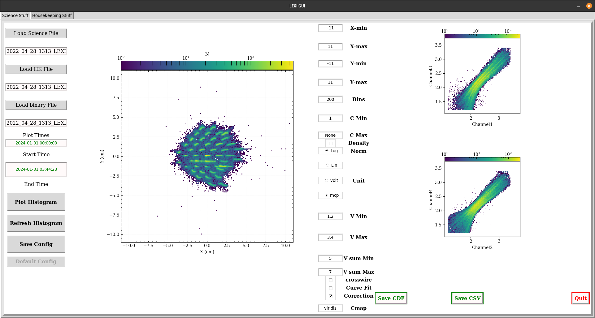
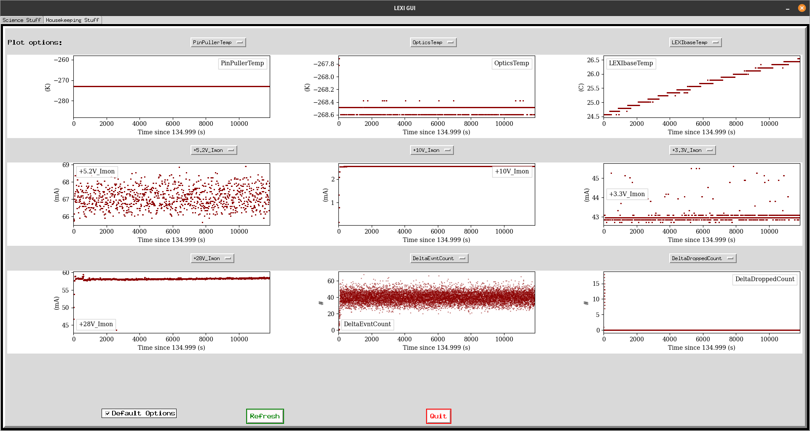

Clik on the link to download the software: LEXI software
Clik on the link to download the example files: LEXI example files
$git clone
git@github.com:Lexi-BU/lxi_gui.git$python3 -m venv
lexi_gui_env (or any other name you want to give to the environment)
(for Ubuntu)$sudo apt-get install python3-venv (for Ubuntu)
$source
lexi_gui_env/bin/activate$pip install -r
requirements.txtlxi_gui.py using the command $python lxi_gui.py (or
$python3 lxi_gui.py if you have both python2 and python3 installed).
$./lxi_gui.sh (if
the file is an executable file).$git clone
git@github.com:Lexi-BU/lxi_gui.git$cd lxi_gui$pip install poetry$poetry install$poetry shelllxi_gui.py using the command $python lxi_gui.py (or
$python3 lxi_gui.py if you have both python2 and python3 installed).
$./lxi_gui.sh (if the file is
an executable file).$./lxi_gui.sh. If for some reason this doesn't work, check if
the file lxi_gui.sh is an executable file or not.
$chmod a+x lxi_gui.sh to make it executable
lxi_gui.py and the GUI will pop-up.
Please let me know if you have any trouble in using the program.

